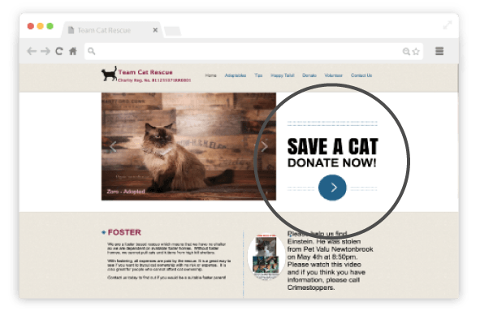
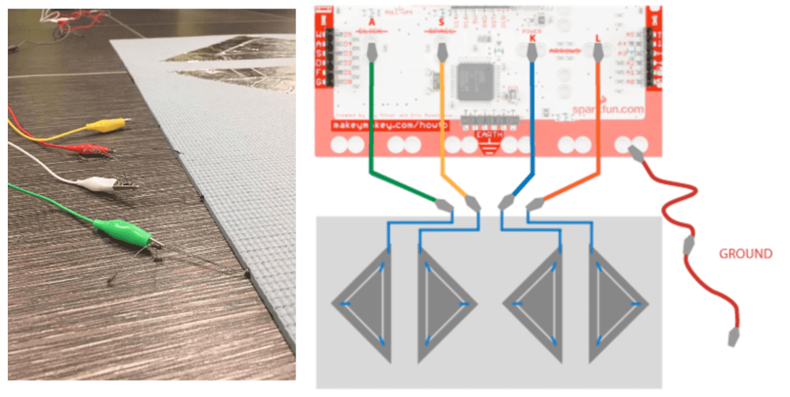

Team Cat Rescue
UX/UI Design | Web Development
Team Cat Rescue is redesign project, in collaboration with three group members in the Sheridan Interactive Media program. The requirements were to build a responsive multi-page website, collaborate through a Git repository, implement two databases and create visual coherency between the pages of the site.
Technologies: HTML/CSS, Adobe Illustrator, JavaScript, PHP, MySQL, Git
Date: December 2016
Website: Link
My Role
I led the design and project management role in a collaborative redesign for Team Cat Rescue’s site. I worked with a small team of developers and a designer.
I created the group wireframes and prototypes, driven by human-centered design principles. I worked on the 'About' page and the individual pages for each cat.


The Challenge
Establishing Purpose
Team Cat Rescue’s current site lacks focus. The site emphasizes foster-based rescue for their cats but the Call-to-Action would send users to the donation page. The site is not optimal for mobile use.
We had 3 weeks to build a redesign for the site.
The Approach
Divergent-Convergent
// Exploration Phase (Divergent thinking): Each team member conducted market research and sketched our own ideas of how the site should look like. Learning to ask the right questions is pivotal to any design process in order to incorporate appropriate UX strategies.
// Refinement Phase (Convergent thinking): Next, we pitched our ideas and findings to the team and out group members. This helped us attain the feedback we needed to push our project forward.
//Outcome:
1) Simple/effective filtering system upon landing 2) Individual cat stories and success stories 3) Booking an appointment to see the cat


Reflection
What I learned
Through this project, I learned that collaboration goes beyond communication. It requires a mutual effort in setting attainable goals, creative problem solving and a streamlined approval process.
It was important to always have someone keep the purpose and goal of the project in check. The “What is this for” and “Are we building the right thing" rather than being too focused on what we are building. Creating is iterative.
I think that there is value in having clarity in not just the finished project but the intended experience you want the user to have.

Yweets - API Mashup
UI Design | Web Development
I combined Twitter and Yelp's search APIs to give users access to the latest Twitter feed via hashtags by searching the name of a restaurant. This gives the user feedback to what others have to say about a restaurant or business.
The Twitter Search API is part of Twitter’s REST API. It focuses on relevance by preforming a query for recent or popular Tweets published within the last seven days. While Yelp’s Business Search API returns information about businesses and reviews by accessing the business id.
Technologies: Twitter REST API, Yelp Search API, HTML/CSS, PHP
Date: January 2017
Website: Link

Travel App Demo
UX/UI Design | Video Animation
Using the 8-6-4-2 Rapid Prototype method, we sketched for 8 minutes, 6 minutes, 4 minutes and then 2 minutes with feedback sessions inbetween. I worked with three group members to design and create a prototype demo video for a mobile application with a boarding pass feature as the main screen.
Technologies: Adobe Illustrator, After Effects
Date: February 2017
Youtube: Link


Fruitails
UX/UI Design | Animation
Fruitails is a split screen catch game with an interactive mat controller created for a Tech Studio Design course. Players control the movement of two characters, which their feet, at the same time. There are four buttons on the mat used as arrow keys. LED lights are synced with all key press to indicate that the mat is responsive.
Technologies:HTML5 Canvas animation, CreateJS, zimjs libraries, Makey Makey Classic
Additional Material: Aluminum foil tape, conductive thread, LED lights, wires, alligator clips
Date: December 2016
Website: Link
My Role
I worked with a graphic designer for this project. We were both interested in creating a technology that would make physical activity more fun and engaging for beginners.
I worked on the instructions screen, background assets and animation with CreateJS libraries as well as the design/implementation of the interactive mat controller.
Requirements: A proposal, alpha preview, presentation, final write-up and a gitHub tutorial


The Challenge
Ideation and Feasibility
For our first Tech Studio Design project, we had the time, resources and a lot of great technology to use. Our challenge was building a proof of concept and the project flow.

The Approach
Building Simultaneously
We built a paper prototype of the mat with foil tape and conductive thread. This would ensure that keypress events and LED lights worked the way we wanted before having it transferred to the working prototype.
For the game, we animated on the HTML5 Canvas with the zim.js and EaselJS external libraries.

The Stumbles
Fail Fast Fail Early
Using Arduinos for keypress events would require an extra usb keyboard. We decided to use the Makey Makey board instead for its durability.
The new interface for V1.2 made the remapping process a lot simpler. However, the tutorials we needed for connecting the Makey Makey board to LED lights were for the Classic version. We decided to remap the Classic version by modifying the code using an Arduino IDE Firmware.

After successfully connecting one light using pin D14, we tried to use D16 to connect to extra lights using the same method. However, D16 is defaulted to mouse events, which is not used in our case. We solved this problem by extending GND and D14 to an external breadboard so that we can connect to multiple lights instead of using different pins on one board.
Game: Setting random falling objects within four individual columns. Controlling the falling speed and time to manage the game difficulty. Objects staying on stage after falling, slowing down the game. Overlapping apples/pears with traps (rocks), hit test sometimes not working. Set capacity for score bar to progress to next level

The Victories
And Then it Works...
While researching conductive material, we went from pressure sensors to using foil tape and conductive thread which greatly expanded the area that players can use. It was also less costly and more durable than the other options we researched such as Velostat or conductive fabric.
We got two LED lights to light up when extending keyboard pins into the breadboard.

The design of the buttons were well thought out. All the seams from the threads were hidden by sewing within the mat material. The conductive thread created a path from each button to the center of the mat, which solved our concern with having too many wires.
Extending the ‘ground’ of the Makey Makey by connecting alligator clips also did not seem to take away from the player’s experience.
Reflection
What I Learned
Building the game itself was a collaborative task. We would witness our game break over and over again but then we would see it start to work the way it should. We also created all of the assets for the game as we saw it come to life.


Interactive Data Visualization
Interaction Design | Web Animation
Inspired by Food Cuisine's unique data visualization displays, I created an interactive demo where users can drag and play around with the food items to reveal hidden facts or audio feedback.
Technologies: HTML5 Canvas Animation, CreateJS, zimjs libraries, Adobe Illustrator, Adobe Photoshop
Date: November 2016
Website: Link


My Travel Inspo
UX/UI Design | Web Development
My Travel Inspo is the first site I created in my grad program at Sheridan using vanilla JavaScript and PHP. I wanted to create a conceptual site based on my experiences travelling over the past year. I animated a plane and a character I created of myself to show progression towards places I dream to be. The idea of "seeing myself there" is represented by a function in JavaScript that simply generates a random background.
Technologies: HTML/CSS, JavaScript, PHP
Date: October 2016
Website: Link
My Role
This project took place September to October 2016. I designed and developed my first website, a personalized travel inspiration site, using HTML, CSS, JavaScript and PHP.

The Challenge
No External Libraries
The requirements for this first project was to build a responsive site without external libraries. The challenge was how to go from a conceptualized idea into executable parts.
The Approach
The Design Process
The design context for the project was to decide our own challenge. My approach was to have purpose in my work. I wanted to bring the concept to life by figuring out what i wanted my learning outcomes to be as well as the tools and skills I wanted practice using.

The Stumbles
The Learning Curve
Multiple takes: I started on one version of the site before being introduced to CSS flex box layouts, positioning and media queries which would have been very helpful to know before.
Adding class active on Navigation: I created an event listener that would add or remove CSS styling for the active class depending on the user’s current scroll location on the screen.
The issue was that styling from the previous section could not be removed since the last section of the page ‘connect’ would never reach the top of the screen. After multiple tries, the best solution was to subtract the top of the previous section by the pixel height of the ‘connect’ div.

Incorporating PHPOriginally, I wanted to have a PHP function that would randomly display background images from an array at a set interval. However, there are no timers in PHP because once the server executes PHP it sends the finished HTML result to the browser. I used JavaScript instead.

The Victories
The Work Grind
Setting checkpoints: One thing that I have learn through my journey of self-learning is that building takes a lot of time. Thus, I started on the project a month before and set checkpoints every week to see how I have progressed.
Adding a gallery feature: I finished the site at the beginning of the week and took the extra time to build a responsive gallery. I used PHP to randomize the order of the divs displayed in the gallery.

Reflection
What I Learned
I learned that the process of building helps to solidify my skills by giving it context. A place to make errors and see how things work together. My next steps to learning would be embracing variation in terms of the environment and context of use.